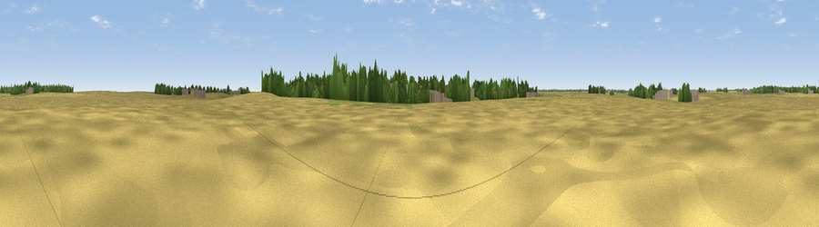

Mill Hill
#45431 in England · top 85% of its area beats it · near AldbroughWhere it is
The exact computed spot (TA 24155 39156). Click the marker for map links.
The view, rendered

A 360° render of this exact spot computed from the terrain model, tree cover and land cover — summer colours, afternoon light, calibrated against photographs of famous viewpoints. Real trees, hedges and buildings will differ in detail.
The panorama
Grey silhouette: terrain skyline in each direction (720 bearings, Earth curvature and refraction included). Dashed green: skyline with trees (+15 m) and buildings (+8 m) as obstacles. Blue strip: how far the ground is visible on each bearing.
Where the view opens
Wedge length = distance to the farthest visible ground on that bearing (vegetation-aware). Rings at 10, 25 and 50 km.
What fills the view
75% cropland · 12% grassland · 7% built-up · 6% woodland
Angular shares of the visible panorama (visual magnitude), not map area. Landscape diversity 0.36 (0–1 Shannon).
Key numbers
More beautiful places nearby
The staircase of upgrades: each row has a higher view potential than everything closer. Driving times are estimates from straight-line distance, calibrated against real road routing — check an actual route before setting out.
| Place | Direction | Drive | Score |
|---|---|---|---|
| Sandpit Hil | ESE · 0 km | ~2 min | 25.4 |
| Burst Hill | E · 1 km | ~3 min | 27.4 |
| Collin Hill | NNW · 2 km | ~6 min | 33.2 |
| Euber Hill | NNW · 6 km | ~13 min | 36.4 |
| Leys Hill | NNW · 11 km | ~20 min | 45.4 |
| Viewpoint near Easington | SE · 23 km | ~38 min | 60.5 |
| Viewpoint near Flamborough | N · 30 km | ~47 min | 61.2 |
| Viewpoint near South Newbald | W · 32 km | ~49 min | 62.3 |
53.83383, -0.11488 · source: osm peak · position refined by local search. Computed location — check access rights before visiting.